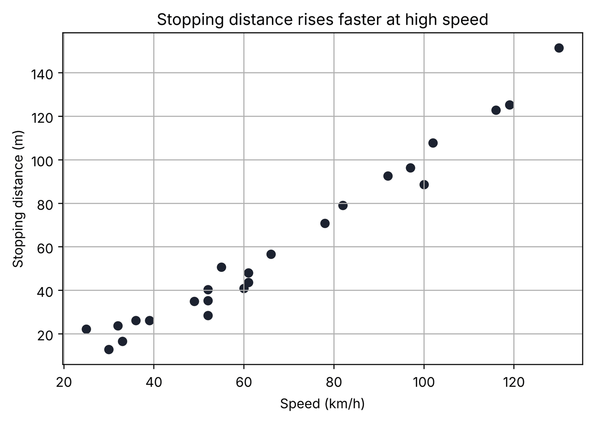
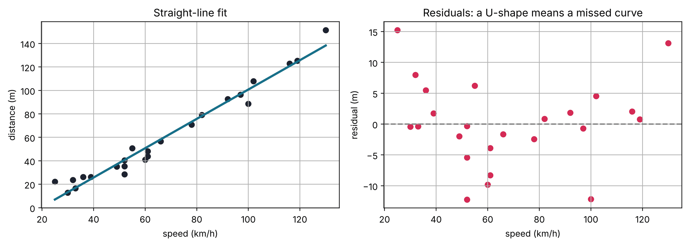
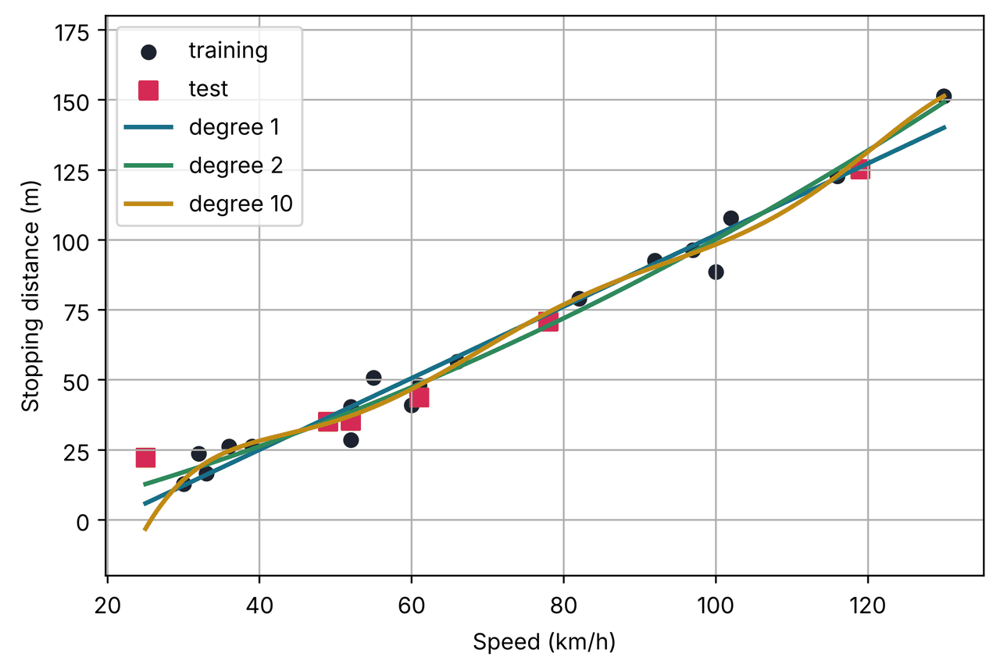
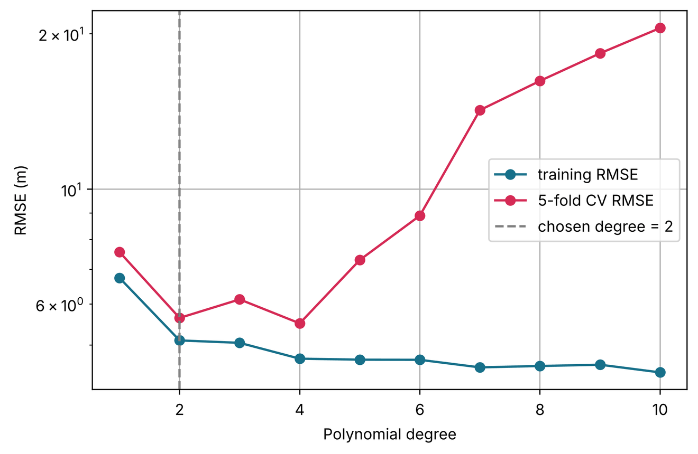
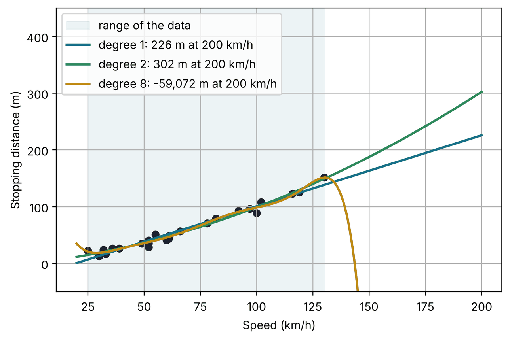

Lesson 4 · Polynomial regression in Python
Polynomial regression in Python, line by line.
A complete, runnable notebook that fits curves to car stopping-distance data: spotting the curve, engineering polynomial features, building a scikit-learn pipeline, choosing the degree with cross-validation and checking the danger of extrapolation. Every line is explained: hover over (or tap) a line to see what it does.
1 Hover over or tap any numbered line of code to highlight its explanation. Every output and chart below was produced by running this exact notebook.
1Import the libraries
On top of the usual NumPy, pandas and Matplotlib, polynomial regression needs three extra scikit-learn tools: PolynomialFeatures (creates $x^2, x^3, \dots$), StandardScaler (puts features on the same scale) and make_pipeline (chains steps together).
- %config InlineBackend.figure_format = "retina"1
- import numpy as np2
- import pandas as pd3
- import matplotlib.pyplot as plt4
- from sklearn.preprocessing import PolynomialFeatures, StandardScaler5
- from sklearn.pipeline import make_pipeline6
- from sklearn.linear_model import LinearRegression7
- from sklearn.model_selection import train_test_split, KFold, cross_val_score8
- from sklearn.metrics import mean_absolute_error, mean_squared_error, r2_score9
-
- plt.rcParams["figure.figsize"] = (7, 4.5)10
- plt.rcParams["axes.grid"] = True11
2Load the dataset
24 test drives: the car's speed (km/h) and the distance it needed to stop (m). Physics tells us braking distance grows with the square of speed, so we expect a curve.
- url = "https://raw.githubusercontent.com/SaeedSerwan/regression/main/data/speed_stopping_distance.csv"1
- df = pd.read_csv(url)2
- df.columns = ["speed", "distance"]3
- df = df.sort_values("speed").reset_index(drop=True)4
- print("Rows and columns:", df.shape)5
- df.head()6
Rows and columns: (24, 2)
| speed | distance | |
|---|---|---|
| 0 | 25 | 22.2 |
| 1 | 30 | 12.8 |
| 2 | 32 | 23.7 |
| 3 | 33 | 16.6 |
| 4 | 36 | 26.2 |
3Look at the data
- df.describe().round(1)1
| speed | distance | |
|---|---|---|
| count | 24.0 | 24.0 |
| mean | 67.5 | 60.1 |
| std | 30.8 | 39.1 |
| min | 25.0 | 12.8 |
| 25% | 46.5 | 27.9 |
| 50% | 60.5 | 45.9 |
| 75% | 93.2 | 89.6 |
| max | 130.0 | 151.4 |
- plt.scatter(df["speed"], df["distance"], color="#1c2230")1
- plt.xlabel("Speed (km/h)")2
- plt.ylabel("Stopping distance (m)")2
- plt.title("Stopping distance rises faster at high speed")3
- plt.show()4

4Try a straight line first
Always start with the simplest model. Then check its residuals to see whether it missed a pattern.
- X = df[["speed"]]1
- y = df["distance"]2
-
- line = LinearRegression().fit(X, y)3
- line_resid = y - line.predict(X)4
-
- fig, axes = plt.subplots(1, 2, figsize=(11, 4))5
- axes[0].scatter(X["speed"], y, color="#1c2230")6
- axes[0].plot(X["speed"], line.predict(X), color="#17708a", linewidth=2.5)7
- axes[0].set(title="Straight-line fit", xlabel="speed (km/h)", ylabel="distance (m)")8
- axes[1].scatter(X["speed"], line_resid, color="#d52a55")9
- axes[1].axhline(0, color="grey", linestyle="--")10
- axes[1].set(title="Residuals: a U-shape means a missed curve", xlabel="speed (km/h)", ylabel="residual (m)")11
- plt.tight_layout()12
- plt.show()13

The residuals are positive at both ends and negative in the middle: a U-shape. The straight line is too low at slow and fast speeds and too high in between. We need a curve.
5Create polynomial features
Polynomial regression is linear regression on extra columns built from $x$: $x^2$, $x^3$, and so on.
PolynomialFeatures builds them for us. Let's look at what it produces for degree 2.
- poly = PolynomialFeatures(degree=2, include_bias=False)1
- features = poly.fit_transform(X.head())2
- pd.DataFrame(features, columns=poly.get_feature_names_out())3
| speed | speed^2 | |
|---|---|---|
| 0 | 25.0 | 625.0 |
| 1 | 30.0 | 900.0 |
| 2 | 32.0 | 1024.0 |
| 3 | 33.0 | 1089.0 |
| 4 | 36.0 | 1296.0 |
The model is now $\hat y = \beta_0 + \beta_1\,\text{speed} + \beta_2\,\text{speed}^2$. It is still linear in the coefficients $\beta$, so ordinary least squares fits it.
6Fit a degree-2 model
A pipeline joins the feature step and the model into one object, so fit and predict apply both steps automatically.
- X_train, X_test, y_train, y_test = train_test_split(1
- X, y, test_size=0.25, random_state=18)2
-
- quad = make_pipeline(3
- PolynomialFeatures(degree=2, include_bias=False),3
- LinearRegression())3
- quad.fit(X_train, y_train)4
-
- lr = quad.named_steps["linearregression"]5
- b0, b1, b2 = lr.intercept_, lr.coef_[0], lr.coef_[1]6
- print(f"distance = {b0:.3f} + {b1:.4f}·speed + {b2:.6f}·speed²")7
distance = -5.281 + 0.6120·speed + 0.004428·speed²
The small positive coefficient on $\text{speed}^2$ is the curvature: at high speeds it dominates, just as the physics predicts.
7Compare against the straight line on the test set
- def evaluate(model, name):1
- pred = model.predict(X_test)2
- return {"model": name,3
- "MAE": mean_absolute_error(y_test, pred),3
- "RMSE": np.sqrt(mean_squared_error(y_test, pred)),3
- "R²": r2_score(y_test, pred)}3
-
- straight = LinearRegression().fit(X_train, y_train)4
- comparison = pd.DataFrame([evaluate(straight, "degree 1 (line)"),5
- evaluate(quad, "degree 2 (quadratic)")])5
- comparison.round(3)6
| model | MAE | RMSE | R² | |
|---|---|---|---|---|
| 0 | degree 1 (line) | 5.789 | 7.856 | 0.948 |
| 1 | degree 2 (quadratic) | 4.025 | 4.981 | 0.979 |
Lower MAE and RMSE and a higher R² on unseen data: the curve is genuinely better, not just more flexible.
But only 6 cars are in the test set. With so few, the verdict depends on which cars happen to land there (try
random_state=1in step 6 and the line wins!). That is why step 9 uses cross-validation, which tests on every car once.
8What happens with more flexibility?
Let's plot curves of several degrees. Higher degrees can wiggle to chase individual points.
- grid = pd.DataFrame({"speed": np.linspace(X["speed"].min(), X["speed"].max(), 300)})1
-
- plt.scatter(X_train["speed"], y_train, color="#1c2230", label="training")2
- plt.scatter(X_test["speed"], y_test, color="#d52a55", marker="s", s=60, label="test")3
- for degree, colour in [(1, "#17708a"), (2, "#2e8a5a"), (10, "#c08a12")]:4
- model = make_pipeline(PolynomialFeatures(degree, include_bias=False),5
- StandardScaler(),6
- LinearRegression())7
- model.fit(X_train, y_train)8
- plt.plot(grid["speed"], model.predict(grid), color=colour, linewidth=2, label=f"degree {degree}")9
- plt.ylim(-20, 180)10
- plt.xlabel("Speed (km/h)")11
- plt.ylabel("Stopping distance (m)")11
- plt.legend()11
- plt.show()11

The degree-10 curve bends to pass close to the training points: it is overfitting and will predict new cars badly.
9Choose the degree with cross-validation
One test split is a small, noisy sample. 5-fold cross-validation splits the data into 5 parts, trains on 4 and tests on the 5th, five times over, and averages the error.
- cv = KFold(n_splits=5, shuffle=True, random_state=0)1
- rows = []2
- for degree in range(1, 11):3
- model = make_pipeline(PolynomialFeatures(degree, include_bias=False),4
- StandardScaler(), LinearRegression())4
- scores = cross_val_score(model, X, y, cv=cv,5
- scoring="neg_root_mean_squared_error")5
- train_rmse = np.sqrt(mean_squared_error(y, model.fit(X, y).predict(X)))6
- rows.append({"degree": degree, "train RMSE": train_rmse, "CV RMSE": -scores.mean()})7
-
- cv_table = pd.DataFrame(rows).set_index("degree")8
- cv_table.round(2)9
| train RMSE | CV RMSE | |
|---|---|---|
| degree | ||
| 1 | 6.74 | 7.56 |
| 2 | 5.10 | 5.64 |
| 3 | 5.05 | 6.12 |
| 4 | 4.70 | 5.50 |
| 5 | 4.68 | 7.30 |
| 6 | 4.68 | 8.89 |
| 7 | 4.52 | 14.23 |
| 8 | 4.55 | 16.20 |
| 9 | 4.58 | 18.32 |
| 10 | 4.42 | 20.51 |
- best = cv_table["CV RMSE"].min()1
- chosen = cv_table[cv_table["CV RMSE"] <= 1.05 * best].index.min()2
- print(f"Lowest CV RMSE = {best:.2f} m → chosen degree = {chosen}")3
-
- plt.plot(cv_table.index, cv_table["train RMSE"], "o-", color="#17708a", label="training RMSE")4
- plt.plot(cv_table.index, cv_table["CV RMSE"], "o-", color="#d52a55", label="5-fold CV RMSE")5
- plt.axvline(chosen, color="grey", linestyle="--", label=f"chosen degree = {chosen}")6
- plt.yscale("log")7
- plt.xlabel("Polynomial degree")8
- plt.ylabel("RMSE (m)")8
- plt.legend()8
- plt.show()8
Lowest CV RMSE = 5.50 m → chosen degree = 2

Training error always falls as the degree rises, but cross-validated error falls and then climbs. That U-shape is the bias–variance trade-off. Choosing the simplest model that is close to the best protects us from reading too much into small differences.
10Final model and predictions
- final = make_pipeline(PolynomialFeatures(chosen, include_bias=False),1
- StandardScaler(), LinearRegression())1
- final.fit(X, y)2
-
- new_speeds = pd.DataFrame({"speed": [50, 90, 120]})3
- new_speeds["predicted distance (m)"] = final.predict(new_speeds).round(1)4
- new_speeds5
| speed | predicted distance (m) | |
|---|---|---|
| 0 | 50 | 36.5 |
| 1 | 90 | 84.4 |
| 2 | 120 | 131.3 |
11The danger of extrapolation
Our data covers about 25–130 km/h. What do different models say at 200 km/h?
- wide = pd.DataFrame({"speed": np.linspace(20, 200, 300)})1
-
- plt.axvspan(X["speed"].min(), X["speed"].max(), color="#17708a", alpha=0.08, label="range of the data")2
- plt.scatter(X["speed"], y, color="#1c2230")3
- for degree, colour in [(1, "#17708a"), (2, "#2e8a5a"), (8, "#c08a12")]:4
- model = make_pipeline(PolynomialFeatures(degree, include_bias=False),5
- StandardScaler(), LinearRegression()).fit(X, y)5
- at_200 = model.predict(pd.DataFrame({"speed": [200]}))[0]6
- plt.plot(wide["speed"], model.predict(wide), color=colour, linewidth=2,7
- label=f"degree {degree}: {at_200:,.0f} m at 200 km/h")7
- plt.ylim(-50, 450)8
- plt.xlabel("Speed (km/h)")9
- plt.ylabel("Stopping distance (m)")9
- plt.legend()9
- plt.show()9

Inside the shaded region the models roughly agree. Outside it they give wildly different answers, and a high-degree polynomial can even predict a negative distance. Never trust a polynomial far outside the range of its training data.
Summary
| Step | Code |
|---|---|
| Create features | PolynomialFeatures(degree, include_bias=False) |
| Scale | StandardScaler() |
| Combine | make_pipeline(features, scaler, LinearRegression()) |
| Choose the degree | cross_val_score(model, X, y, cv=KFold(5, shuffle=True)) |
| Predict | model.predict(new_data) |
Exercises
- Change the URL to
.../data/hour_electricity_demand.csv(columnshour,demand). Which degree does cross-validation choose? Why is it higher than for stopping distance? - In step 6, try
random_statevalues 0 to 5. How often does the quadratic beat the line on the test set? What does this tell you about evaluating on only 6 points? - In step 9, replace the 5 % rule with simply taking the degree with the lowest CV RMSE. Do you get the same answer? Which would you trust more?
- Fit degree 2 to
.../data/projectile_height_time.csv. The physics formula is $h = h_0 + v_0 t - \tfrac{1}{2} g t^2$. Use the $t^2$ coefficient to estimate $g$. - Add
Ridge(alpha=1.0)(fromsklearn.linear_model) in place ofLinearRegression()for the degree-10 model. How does its curve change?